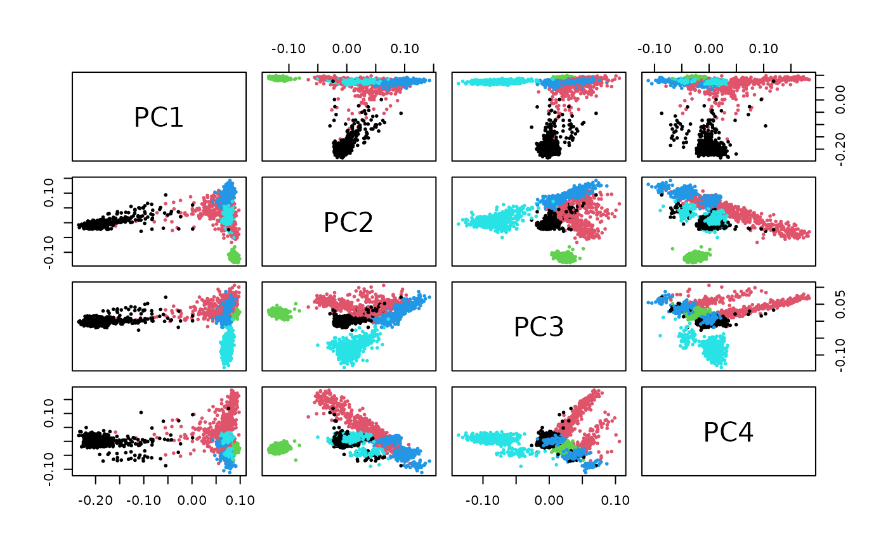
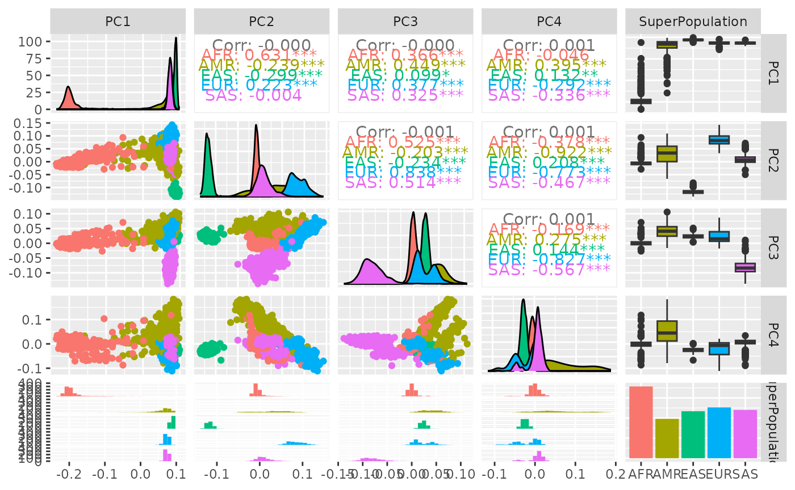

B1_1KG_chr17.RmdThis package demonstrates the use of genotypes obtained via calls against the T2T reference genome. Our objectives are:
We have made a large resource available in the hail.is MatrixTable format. This can be retrieved without egress charges using the code in this vignette. A convenient approach uses rclone, as described in the appendix. The zipped MatrixTable folders are at
https://mghp.osn.xsede.org/bir190004-bucket01/Bioc1KGt2t/t17.zipThis 42GB file should be unzipped in a folder to which the environment variable HAIL_T2T_CHR17 will point.
Ensure that Sys.getenv("HAIL_T2T_CHR17") returns the location of the unzipped MatrixTable resource.
library(BiocT2T)
library(BiocHail)
hl = hail_init()
# NB the following two commands are now encapsulated in the rg_update function
nn <- hl$get_reference('GRCh38')
nn <- nn$read(system.file("json/t2tAnVIL.json", package="BiocHail"))
# updates the hail reference genome
bigloc = Sys.getenv("HAIL_T2T_CHR17")
if (nchar(bigloc)>0) {
mt17 <- hl$read_matrix_table(Sys.getenv("HAIL_T2T_CHR17"))
mt17$count()
}## [[1]]
## [1] 3824434
##
## [[2]]
## [1] 3202The following computation takes close to 30 minutes with 64 cores. We saved the loadings in pc_990kloci.
pcastuff = hl$hwe_normalized_pca(mt17$sample_rows(.25)$GT)
data(pc_990kloci)
pc_990kloci[1:3,1:4]## PC1 PC2 PC3 PC4
## HG00096 0.08571635 -0.09670515 -0.04432893 0.032206907
## HG00097 0.07130168 -0.06820003 -0.01072185 0.004602563
## HG00099 0.06578964 -0.08644191 -0.01452058 -0.010706626PCA has also been performed with samples of 3000 and 190000 loci.
The populations of origin of the 3202 samples are tabulated in igsr_pops.
##
## AFR AMR EAS EUR SAS
## 183 10 4 5 5 5
igsr_pops |> dplyr::filter(`Superpopulation code` %in% c("AFR", "SAS")) |>
dplyr::select(`Superpopulation name`, `Population code`, `Population name`) |>
dplyr::arrange(desc(`Superpopulation name`))## Superpopulation name Population code Population name
## 1 South Asian Ancestry BEB Bengali
## 2 South Asian Ancestry PJL Punjabi
## 3 South Asian Ancestry GIH Gujarati
## 4 South Asian Ancestry STU Tamil
## 5 South Asian Ancestry ITU Telugu
## 6 African Ancestry ACB African Caribbean
## 7 African Ancestry GWW Gambian Wolof
## 8 African Ancestry ASW African Ancestry SW
## 9 African Ancestry YRI Yoruba
## 10 African Ancestry GWD Gambian Mandinka
## 11 African Ancestry MSL Mende
## 12 African Ancestry ESN Esan
## 13 African Ancestry LWK Luhya
## 14 African Ancestry GWF Gambian Fula
## 15 African Ancestry GWJ Gambian JolaLatitude and longitude are also available for the population centers from which samples were collected.
We have several approaches to static visualization of PCs.
A pairs plot for selected PCs for superpopulation visualization based on 190000 loci can be quickly produced.

A more carefully annotated view is produced using GGally::ggpairs:
strat2d(pc_190kloci, 1:4, superOnly=TRUE, GGally=TRUE)
It can be painful to install and configure rclone. We use a docker container. Let RC_DATADIR be an environment variable evaluating to an available folder.
Also, place the text file with contents
[osn]
type = s3
provider = AWS
endpoint = https://mghp.osn.xsede.org
acl = public
no_check_bucket = truein a file rclone.conf in a folder pointed to by the environment variable RC_CONFDIR.
Then the following
docker run -v $RC_DATADIR:/data -v $RC_CONFDIR:/config/rclone -t rclone/rclone:latest ls osn:/bir190004-bucket01/Bioc1KGt2twill list the files with 1KG samples genotyped against the T2T reference.
Use the rclone copyto command to obtain a local copy of the zip file t17.zip in the folder pointed to by $RC_DATADIR:
docker run -v $RC_DATADIR:/data -v $RC_CONFDIR:/config/rclone -t rclone/rclone:latest copyto osn:/bir190004-bucket01/Bioc1KGt2t/t17.zip ./t17.zipThis file should be unzipped in a folder to which the environment variable HAIL_T2T_CHR17 will point.